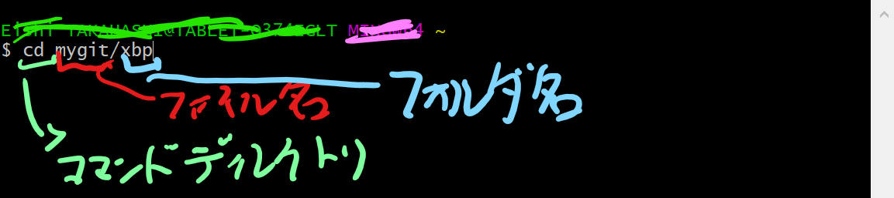
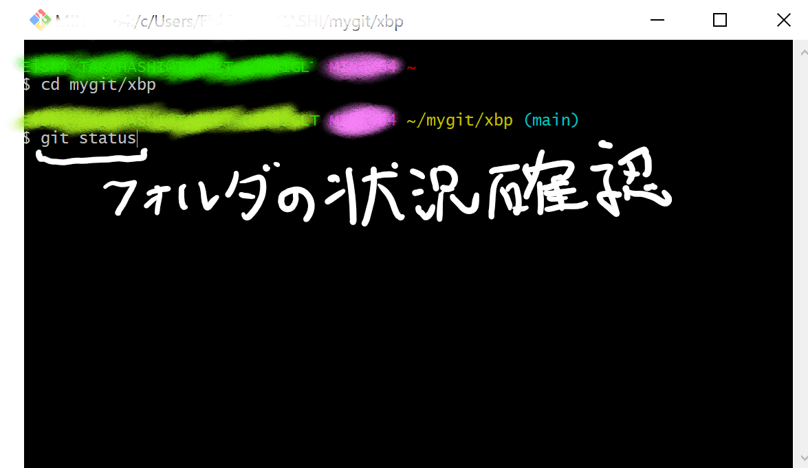
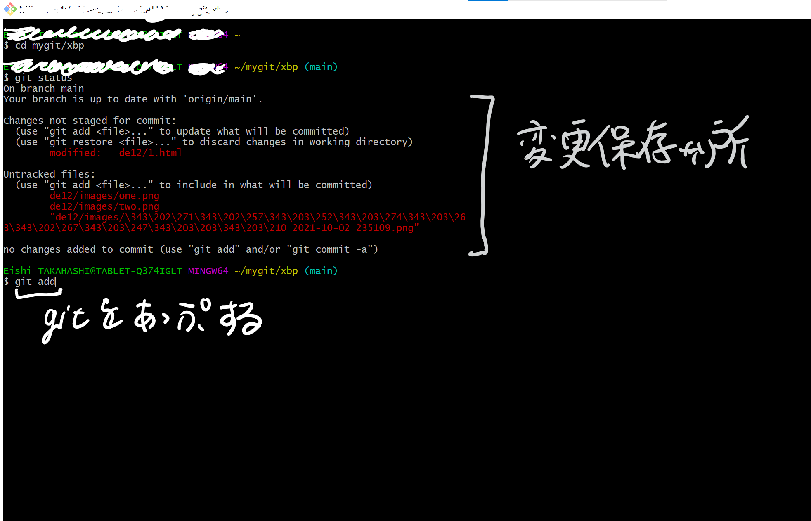
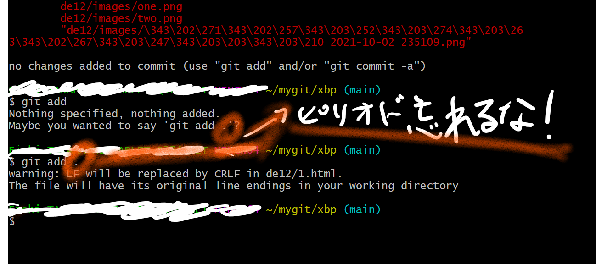
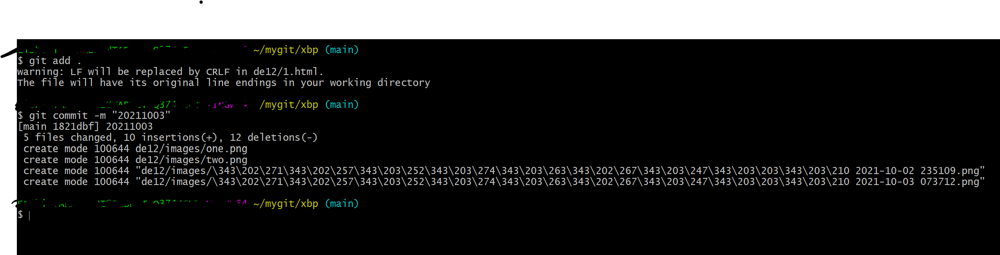
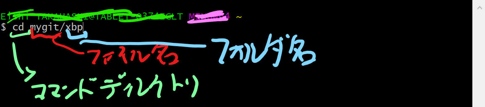
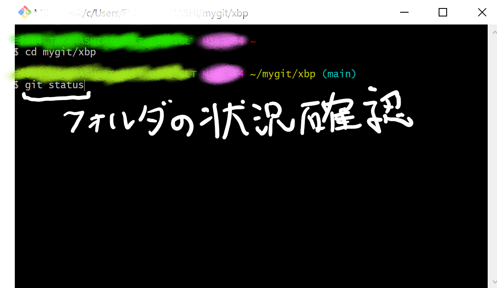
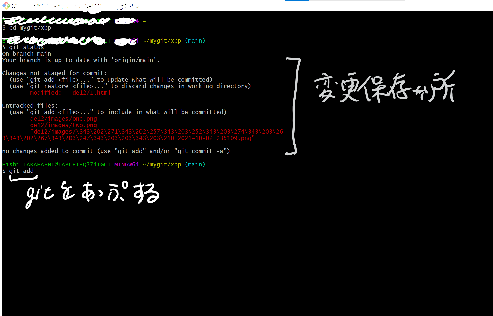
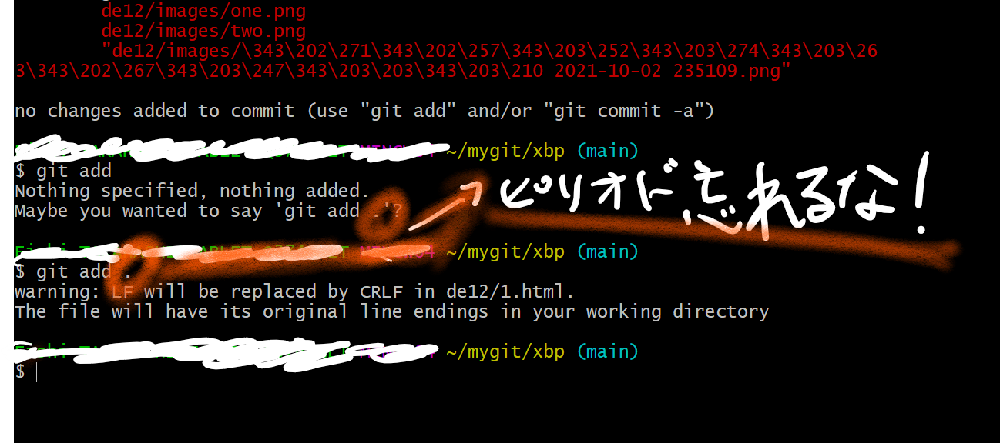
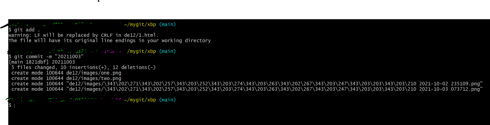

Gitの更新について
ここではそんなGitの更新（反映）のやり方を列挙していきます。






①Git Bush (MAC OSはターミナル)を起動する
②フォルダに移動【cd ○○（ファイル名）/○○（フォルダ名）と入力】

③フォルダの状況確認【git status と入力】

④今回の編集結果を確認のち、gitに編集結果を追加する。【git add. と入力】
※この際ピリオドを忘れないこと！
※この際ピリオドを忘れないこと！


⑤今回の編集過程のラベル付けをする。【git commit -m"ラベル名" と入力】
※日付や編集過程をラベル名にするとよい。
※日付や編集過程をラベル名にするとよい。
